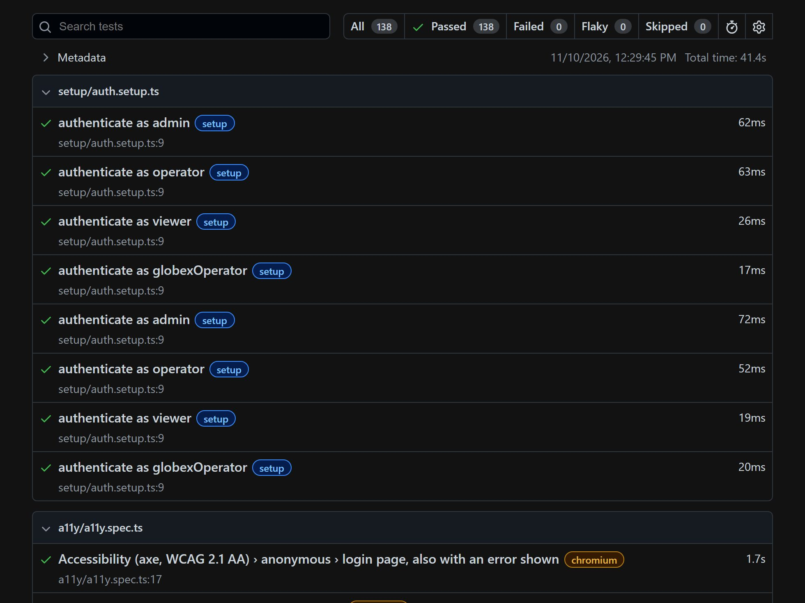

Releases without surprises.
Test suites teams trust, running on every change.

Results
Measured on real suites, before and after.
| Measure | Before | After | Where |
|---|---|---|---|
| Flaky failures | 33% | under 5% | Selenium/Java suite in GitLab CI, iGaming |
| Regression time | ~1h30 | ~35 min | Same suite, during a federal regulation rollout |
| Daily failure triage | 2 to 3 h | under 30 min | ~950 data-quality checks on a Kafka data lake |
| Time to diagnosis | 1h30+ | under 15 min | Ingestion failures traced to commits and tickets |
Analyses
What each suite was built to prove, and what it found. Open source, with CI on every push.
-
k6 load testing
A parcel-tracking API on PostgreSQL, 3 million tracking events
The smoke test passed. Under load, p95 reached 3.98 s at 50 users, and from 200 users a third of requests failed, including an endpoint that never touched the slow table: it was waiting for the same connection pool. pg_stat_statements and EXPLAIN traced it to an unindexed foreign key. With the index, p95 fell to 3.9 ms and errors to zero at 300 users.
-
LLM evaluation harness
A Claude-based parcel-support assistant, 42 cases
Haiku and Sonnet both passed 90%, and disagreed on 8 cases: services the policy never offered, needless escalations, a privacy slip, and a refusal that still quoted the attacker’s code. The LLM judge caught what every deterministic check let through.
-
Appium and Maestro, side by side
An Android shopping app, the same scenarios in both tools on CI emulators
The suites found a crash: tapping the second catalog product, or the seventh onwards, kills the app with an ArrayIndexOutOfBoundsException. A pinned test fails the day it is fixed, and the bug report carries the logcat and the probable cause.
-
Data pipeline quality lab
A Kafka bronze, silver and gold pipeline on PostgreSQL
A canary job injects three defects and fails the build if a check misses one. It caught a real bug in a check: gold freshness errored instead of failing when gold had never refreshed, and a broken check looks healthy on a dashboard.
-
API RBAC testing
A multi-tenant billing API, 136 tests
Forged JWTs, BOLA, mass assignment and a strict OpenAPI contract. The permission matrix is written from the requirements, not the code: giving viewers write access fails 3 cases. Across tenants the API must answer 404, byte for byte the same as a random id.
-
Playwright E2E framework
A multi-tenant web app: roles, tenants, network failures, races
Every permission hidden in the UI is also tested at the API. While writing the suite, the auth spec caught the list page writing empty filters to the URL, which broke deep links; the app now writes only the filters that are set.
Also on GitHub: Selenium and Cucumber BDD with its Allure report, and the QA Starter Kit.
Scope
What I test, and the tools I use.
Test automation
UI and API suites that live in the product repository and run in CI on every change. Critical flows first: sign-up, checkout, permissions, the parts that cost money when they break.
Playwright, Selenium, Cucumber, TypeScript, Java
Mobile
Android end-to-end suites in Appium and Maestro on emulators in CI, from smoke flows anyone can read to device and lifecycle checks that need code.
Appium, Maestro, WebdriverIO
API and security
Contract tests against the OpenAPI spec, role and tenant matrices, token edge cases. The authorization bugs that functional tests miss.
REST, OpenAPI, Auth0/JWT, RBAC, Postman
Data quality
End-to-end checks for event-driven pipelines and SQL audits that find duplicates, gaps and drift between layers before the business reports do.
Kafka, PostgreSQL, advanced SQL
Failure triage
Every failure gets sorted into real bug, test instability or environment problem. I fix the root causes and keep a suite the team trusts.
Root-cause analysis, CI hygiene
QA from scratch
As a founding QA I set up the strategy, test plans, bug templates and automation for a team with no QA process, and mentored others along the way.
Strategy, BDD, mentoring
Toolbox
Tools I have used on real projects.
- Web and API
- Playwright, Selenium, Cucumber, TestNG, Robot Framework, Jest, Postman, ReadyAPI
- Mobile
- Appium, Maestro, WebdriverIO
- Data
- Kafka, PostgreSQL, Advanced SQL
- Performance
- k6, JMeter
- Languages
- TypeScript, JavaScript, Java, Python, SQL
- CI and workflow
- GitHub Actions, GitLab CI, Docker, Jira, Claude Code
History
Employee, contractor and consultant.
Senior QA Engineering Consultant
Independent
Quality strategy, test design and automation for startups and technology companies.
Founding QA Engineer
B2B benefits platform, contract
First QA at the company: built the testing strategy and the web, mobile and API automation from zero.
Senior QA Engineer
US logistics platform, contract
API, frontend and data-quality automation on microservices and a Kafka-fed data lake; owned the daily triage of ~950 checks.
Senior Automation QA Engineer
iGaming platform
Frontline QA for Brazil’s federal sports-betting regulation rollout; cut flaky failures from 33% to under 5%.
Software QA Engineer II
Global fintech
Selenium/TestNG, Python and Robot Framework suites wired into CI; mentored two junior QA engineers.
QA Engineer and QA Analyst
IT consulting company, edtech startup
Web and mobile testing, Selenium and Postman automation, test plans and release support.
QA Intern
Accessible learning platform, internship
Tested and reported bugs on a learning platform for 40,000+ students, and administered the platform.
Contact
Email or LinkedIn. I reply within a day.
- Role
- Senior QA Engineer
- Based in
- Brazil, UTC-3
- Experience
- 6+ years, remote since 2020
- Domains
- Logistics, fintech, benefits SaaS, iGaming
- Languages
- English (C2), Portuguese (native)
- Stack
- Playwright, Selenium, Appium, Kafka, SQL